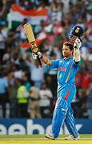

Box Model
Learn about css box model.
Sachin Ramesh Tendulkar, AO is an Indian former international cricketer who
captained the Indian national team. He is regarded as one of the greatest batsmen
in the history of cricket. He is the all-time highest run-scorer in both ODI
and Test cricket with more than 18,000 runs and 15,000 runs, respectively
